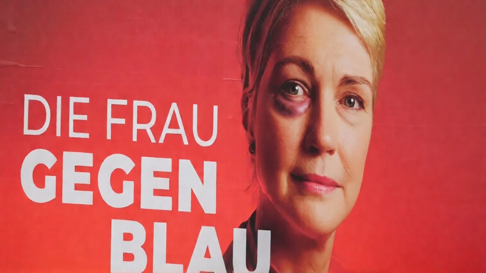

Frau verliert gegen blau, au!
Die AfD wird stärkste Kraft, obwohl Manuela Schwesigs Wahlkampf sogar einen Reim enthielt.

SCHWERIN – Manuela Schwesig hat bei der Landtagswahl in Mecklenburg-Vorpommern trotz der wohl ausgereiftesten Dreiwortkampagne der deutschen Parteiengeschichte den ersten Platz verfehlt. Die SPD kam auf 35,5 Prozent, die AfD auf 38,2 Prozent.
Auf dem Plakat hatte eigentlich alles gestimmt: Frau, Blau, Reim.
Die Wähler scheinen nicht verstanden zu haben, dass ein guter Reim wichtiger ist als ein gutes Regierungsprogramm – besonders wenn dieses primär aus einer Botschaft besteht: „Wählt uns – nicht weil wir etwas bieten können, sondern weil ihr sonst vielleicht die anderen wählt.“
In der SPD-Zentrale herrschte Ratlosigkeit. Die Kampagne enthielt schließlich eine Frau, eine Farbe und einen Gegner. Mehr Inhalt hatte die SPD ihren Stammwählern offenbar nicht zugetraut.
„Wir hatten Frau, Blau und sogar einen Reim“, erklärte ein Wahlkampfstratege. „Offenbar wollten manche Menschen trotzdem wissen, was wir nach 28 Jahren SPD-geführter Landesregierung künftig anders machen würden.“
AfD-Kandidat Leif-Erik Holm erwies sich damit zumindest am Wahlabend als der Mann, der es kann: Seine Partei wurde stärkste Kraft und steht voll im Saft.
Die FDP ist mit 1,0 Prozent raus aus dem Haus. Der CDU drückt bei 4,9 Prozent fest der Schuh: Schlechter schnitt sie bei keiner Landtagswahl in der Geschichte der Bundesrepublik ab.
Die SPD kündigte noch am Abend eine schonungslose Aufarbeitung des Wahlergebnisses an. Vorerst gilt in der Parteizentrale jedoch: „Selbst wenn ich verlier’, erst mal ein Bier.“
Anlass: Nach dem vorläufigen amtlichen Ergebnis der Landtagswahl in Mecklenburg-Vorpommern erhielt die AfD 38,2 Prozent der Zweitstimmen, die SPD 35,5 Prozent, die CDU 4,9 Prozent und die FDP 1,0 Prozent. Die CDU scheiterte damit erstmals bei einer Landtagswahl an der Fünfprozenthürde. Landeswahlleitung Mecklenburg-Vorpommern